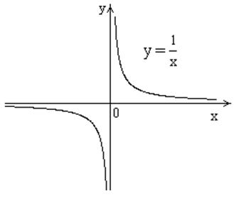

П 19ТУ№14
У графика обе
горизонтальных асимптоты  существуют
и совпадают ().
существуют
и совпадают ().
существуют
и совпадают (). Кроме того, график функции имеет вертикальную асимптоту
имеет вертикальную асимптоту  , поскольку , .
, поскольку , .
имеет вертикальную асимптоту , поскольку , .
существуют
и совпадают (). имеет вертикальную асимптоту , поскольку , .